虚空蔵尊/静岡県
あちこちから漏れ聞こえてくる「この寺はキテる！」というウワサを検証しに行ってきたよ。
向かったのは
虚空蔵尊
というお寺である。正式には
蔵興寺
というらしい。
意識をかえる
パワースポット
だって。ぷぷぷ。
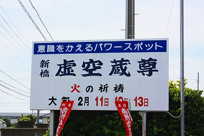
で、どんなトコかというと…
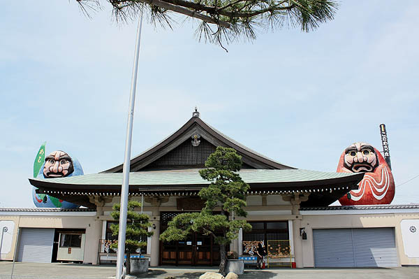
おお。こりゃ確かにパワースポットだわい！
ただし昨今世間一般で騒がれているパワースポットとは
別の種類のパワー
のような気がしてならない。
本堂の左右にそびえるのは、
高さ4メートルの大ダルマ
である。
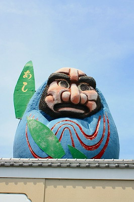
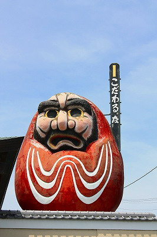
青ダルマには「あし」
赤ダルマには「こだわる。な」。
何なんすか？コレ？
青ダルマの胴体についている緑色のモノは足跡なのだろうか？「あし」って…
で、こだわる。なぁ？…「こだわる。な」の「。」は藤岡弘。の「。」なのか？
ダルマだけで良いものをわざわざ手間をかけてメッセージを掲げるのだから、重大な意味があるはずなのに…
うむ〜、これは禅問答なの…か？
ここは赤ダルマ様に従ってこだわら。ない、っつーことで先に進もう。
本堂前に結界のごとくロープが張られていて、その中に石像がサークル状に並んでいる。
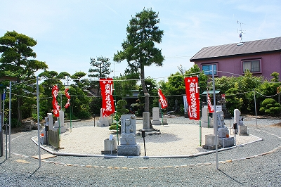
これは
裸足で廻る十二支参り
といい、8体の十二支守り本尊（4体が二支兼任なので正味8体ね）を裸足で廻り、自分の干支の守り本尊の前に到達したら悪いところを擦って下さい、的な参拝アトラクションなのだ。
勿論、十二支守り本尊参りは良く見かけるアトラクションだし、石像を撫でるのもよくあるパターンだ。
しかし。
この砂利のスペースを裸足で歩くのかぁ…
しかも。
左手左足を同時に出して歩くという
緊張した小学生が運動会の行進でやらかすアノ歩き方
で歩かなければならないのだそうな。
さらに。
説明書きの看板には
「後ろ歩きで一回りがベストです」
とある。
ベストって何？後ろ歩き3回とか前歩き12回、とか統計取ったのか？
裸足で後ろ向きに行者歩きで一回り、自分の守り本尊の石像を撫でる…
注文が多すぎるって！
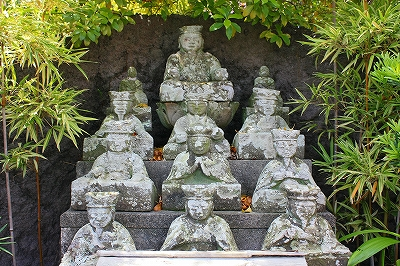
境内の片隅にあった十王像。あんまり恐くないすね。
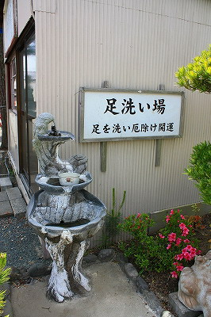
裸足で後ろ歩きした方はこちらで足を洗うのだろうか。でついでに厄除け開運。
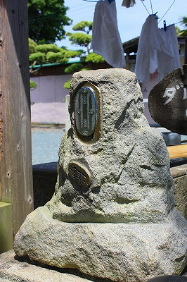
顔が小判になってる石像。頭の中がお金でいっぱい、ということか？
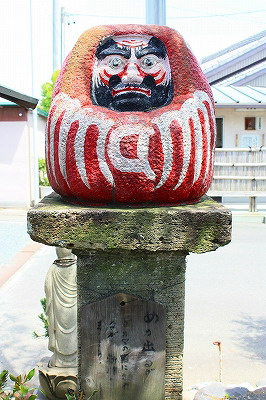
めが出るダルマ。
目にさわりながら祈願しましょう、との事。
確かに目が摩滅してますねー。
昔よく見たダルマのキーホルダー（え？今ないの？）みたいに
目が飛び出すのかと思って
後頭部を軽く小突いて
みようと
したのだが、そういうギミックはありませんでした…
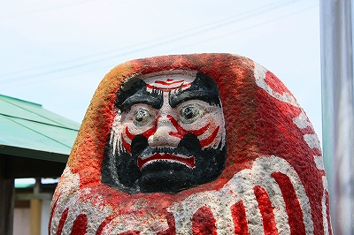
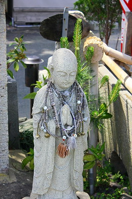
数珠をかけられすぎちゃってるお地蔵さん。
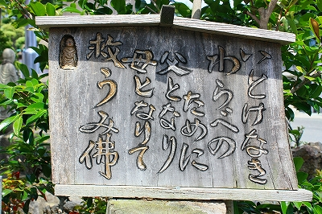 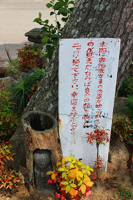
手作り感にあふれている信仰ギミック。
トイレの入り口には烏枢沙摩明王。
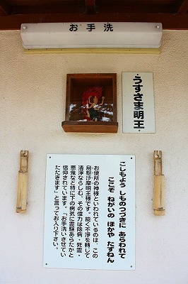
で、本堂内部。欄間上には大きな絵馬がいくつも掲げられている。
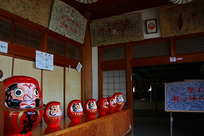 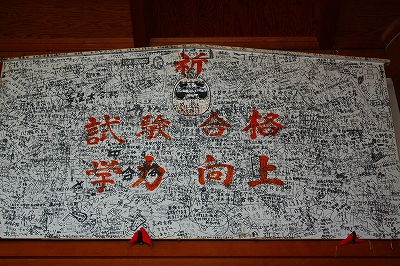
びっしりマジックで書き込まれている。
すっかり忘れていたけどここの本尊は
虚空蔵尊
。知恵の神でもあるのでお願い事も学業成就、ということになろう。
書かれている内容の大半は志望校合格的なものだった。
さらに奥にはダルマさんがずらりと並んでいた。
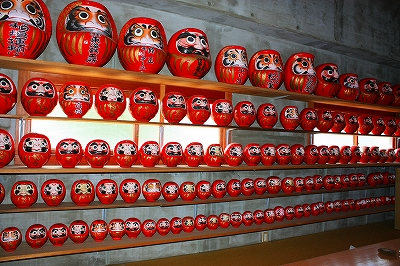
サイズ別に並んでいるが、こうしてみると同じ地域のダルマさんでも色んな顔があるもんですね。
で、最後に要らなくなった人形を納めるところ。
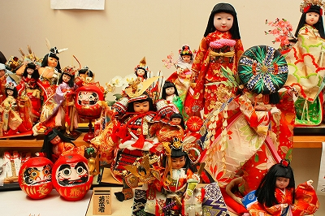
何かお寺というよりは
お願い事よろず請け負い業
みたいな感じだった。
結論として最初の大ダルマのインパクトに比べてやや肩透かしをくらった感は否めないな。
いまいちテンションの上がらないお寺だったが、重要なのはそもそも
お寺というものは私のテンションを上げるために存在しているのではない
という事。
ま、こだわる。な ということで。
2009.05.
珍寺大道場 HOME